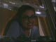
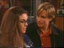
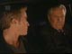
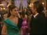
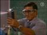
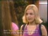

~ ~ Wants ~ ~
~ ~ Info ~ ~
Broe Edits
Edits of Brady and Chloe (as portrayed by Kyle Lowder and Nadia Bjorlin). The edits contain all of Brady's scenes and all of Chloe's scenes, not just when they are together.
The edits were made direct to DVD in the highest quality mode (each DVD runs for one hour). They are in NTSC format so can be played worldwide. Please see the individual DVDs for more info on quality since the source footage varies. Unless otherwise specified the edits are made from 1st generation (original) NTSC EP tapes.
Available Edits - Jump to:
30. July 17 - July 24
31. July 25 - August 6
32. August 6 - August 20
33. August 20 - August 30
34. August 30 - September 19
35. September 20 - October 3
36. October 3 - October 9
37. October 10 - October 16
38. October 16 - October 23
39. October 29 - November 12
40. November 12 - November 22
41. November 22 - December 4
42. December 4 - December 14
43. December 17 - January 9
2002
44. January 9 - February 1
45. February 4 - February 13
46. February 14 - March 12
47. March 12 - April 2
48. April 2 - April 19
49. April 19 - May 7
50. May 7 - May 20
51. May 20 - May 29
52. May 29 - June 7
53. June 7 - June 17
54. June 17 - June 28
55. June 28 - July 23
56. July 23 - August 12
57. August 12 - August 22
58. August 22 - September 9
59. September 9 - September 23
60. September 23 - October 4
61. October 4 - October 16
62. October 16 - October 25
63. October 29 - November 8
64. November 11 - November 22
65. November 22 - December 10
66. December 10 - December 27
1. August 21st - September 6th 2000
Brady appears for the first time at the Habitat for Humanity groundbreaking dedication.
Screencaps - click on images to enlarge
2. September 12th - September 27th 2000
Philip visits Chloe with popcorn. They talk and it leads to Chloe's first kiss.
Screencaps - click on images to enlarge
3. September 27th - October 5th 2000
At the docks, Chloe insults Brady's appearance and he leaves. Craig then arrives and they talk
4. October 9th - October 18th 2000
Brady tells John he would never hurt Belle and they have a long talk.
Screencaps - click on images to enlarge
5. October 18th - October 26th 2000
Chloe remembers the serenade. Philip returns to her house and wants to climb in through the window but he falls from the tree.
Screencaps - click on images to enlarge
6. October 30th - November 9th 2000
Brady talks to Victor and tells him what happened to Belle.
Screencaps - click on images to enlarge
7. November 9th - November 27th 2000
Philip and Chloe talk about Brady and then kiss before Philip leaves.
Screencaps - click on images to enlarge
8. November 28th - December 8th 2000
John arrives and says to Abe "Why'd you kill my son?" John and Roman try to resuscitate Brady. He comes to and is taken away on a stretcher.
Chloe meets Shawn at dotcom and they talk about Brady.
Screencaps - click on images to enlarge
9. December 8th - December 20th 2000
Chloe pins Jan to the ground and waves the rat in her face while Mimi watches from the bushes.
Screencaps - click on images to enlarge
10. December 20th - December 28th 2000
It starts to rain and Nancy falls out the window (holding on to the ledge) and Craig rescues her.
Screencaps - click on images to enlarge
11. December 29th 2000 - January 11th 2001
Chloe tells Philip she doesn't understand why he would like her.
Screencaps - click on images to enlarge
12. January 11th - January 18th 2001
Brady and Marlena talk.
Screencaps - click on images to enlarge
13. January 18th - February 2nd 2001
Brady suggests to John that Roman is still in love with Marlena. Screencaps - click on images to enlarge
14. February 6th - February 19th 2001
Chloe tells Philip he can't trust anyone. Screencaps - click on images to enlarge
15. February 19th - February 26th 2001
Marlena pleads with Brady for them to come to an understanding. They argue and Marlena slaps him after Brady calls her a whore. Screencaps - click on images to enlarge
16. February 26th - March 8th 2001
At the hotel, Chloe watches as Brady falls but won't let anyone help him up. Screencaps - click on images to enlarge
17. March 8th 2001 - March 20th 2001
Brady tells Belle that he going to go ahead with his lawsuit against the Salem PD. Belle talks to Brady about her feelings for Shawn and then asks him if he's in love? Screencaps - click on images to enlarge
18. March 20th - March 29th 2001
Roman arrests Philip. Craig and Nancy drag Chloe back to the hospital and force her to have a rape exam, despite Chloe's protests. Screencaps - click on images to enlarge
19. March 29th - April 9th 2001
Brady tells John that he can't respect Marlena. Screencaps - click on images to enlarge
20. April 9th - April 17th 2001
Chloe argues with Belle and says maybe they shouldn't be friends. Screencaps - click on images to enlarge
21. April 19th - April 27th 2001
In chemistry class, Kevin compliments Chloe on her eyes. Screencaps - click on images to enlarge
22. April 27th - May 8th 2001
Roman asks for the blame to be put on him, not Abe or the Salem PD. Screencaps - click on images to enlarge
23. May 9th - May 21th 2001
Brady tries to break up the fight, but Chloe trips him up so he won't get hurt. The police arrive and Roman arrests Philip and Jason. Screencaps - click on images to enlarge
24. May 22st - May 28th 2001
Chloe wonders what's wrong with her that she isn't worried about Nancy. Screencaps - click on images to enlarge
25. May 29th - June 5th 2001
Chloe and Nancy have an emotional talk. Screencaps - click on images to enlarge
26. June 5th - June 20th 2001
Philip tells Chloe she is A-list now that she is dating him. Philip is jealous that Shawn kissed her and Chloe tells him she hates it when he is jealous, and that he is the only one she wants to go out with. Screencaps - click on images to enlarge
27. June 21st - June 29th 2001
Brady stops by Titan to see Victor who asks him about Chloe. Screencaps - click on images to enlarge
28. June 29th - July 10th 2001
Belle asks Chloe about kissing and love. Screencaps - click on images to enlarge
Quality varies - All of Chloe's scenes are from 2nd generation SP edits (therefore the edits aren't 100% frame accurate). Brady's are mostly from direct to DVD from TV recording (low quality setting, not bad) although there are foreign subtitles over the picture. One very short scene is missing from Brady in jail. Some scenes are mono sound
Brady asks John why he never talks about his mother, Isabella.
The teens wonder about the mysterious can.
Chloe asks Shawn to accompany her in the talent show.
Chloe goes to the pub with Philip, Shawn and Mimi.
Jan and Jason arrive, and Chloe argues with Jan. Jan cuts her hands on the can and blames Chloe.
John visits Brady in jail.
Chloe and Belle get ready to go the movies (as a 'group') with Philip and Shawn.
At the movies, Belle is jealous of Chloe flirting with Shawn and leaves early.
Philip walks Chloe home.
Craig comforts Chloe after she overhears Mimi talking about her.
Brady drinks at Tuscany. He is obnoxious towards Craig and Nancy and threatens to fight Craig.

Quality varies - All of Chloe's scenes are from 2nd generation SP edits (still good). Brady's are mostly from direct to DVD from TV recording (low quality setting, not bad) although there are foreign subtitles over the picture.
After Philip kisses her again, Chloe freaks out.
Chloe talks to Craig about kissing Philip and her relationship with Nancy.
Chloe talks to Philip on the phone and he runs back to the Wesley home to see her.
Jan and Jason watch Philip and Chloe happy together at school and they find out about the bet. (Philip lost a bet with Shawn which is why he invited Chloe to the Last Blast).
Chloe talks to Craig at the Java cafe.
Brady argues with John and Marlena and John loses his temper.
Some girls from School tell Chloe about the bet and Jan taunts her. Upset, Chloe goes to the pier (back in the 'ghoul girl' black ensemble) where she sings 'I need you.'
Brady arrives at the docks and insults Chloe's singing.
Quality varies - All of Chloe's scenes are from 2nd generation SP edits (still good). Brady's are mostly from direct to DVD from TV recording (low quality setting, not bad) although there are foreign subtitles over the picture.
Marlena tells Brady to stay away from her and then he tells her he is going to stay in Salem. Marlena throws her drink at Brady and then tells him to stay away from Belle.
Chloe returns home. She talks to Nancy about her adoption and Chloe tells Nancy she hates her.
Brady creeps up behind Belle with a baseball bat. They playfully insult each other and eat ice cream.
Brady pretends he is going to throw Belle off the penthouse balcony. Marlena and John arrive home and demand him to put her down. Marlena wants Brady to be arrested for attempting to kill Belle.
Chloe goes to her room which Nancy has decorated for her birthday and tearfully opens her presents, including Nancy's old diary. She can't stop thinking about Philip.
Belle and Brady talk about Marlena and Isabella.
Nancy thanks Nancy for remembering her birthday and for the diary.
At school, Philip apologizes to Chloe and she forgives him.
Brady returns home with lots of shopping. John asks where he got it and he says he stole it. John storms into Brady's room in a rage and practically throws him down the stairs and then they talk.
Chloe and Belle talk at Salem place while Brady watches Chloe and then tosses a football around with Philip.
Quality varies - Some 2nd generation SP Pal edits and and some 1st generation SP Pal tapes. The first scenes with Brady and John have subtitles.
Brady argues with Marlena. He wants revenge.
Philip serenades Chloe! He tells Brady about it. They then play basketball but Brady elbows Philip and he storms off.
Chloe tells Nancy about the serenade.
Brady takes Belle to the train tracks. He stands on the tracks as a train approaches while Belle screams at him, before moving off the tracks as the train gets close..
Belle attempts to do the same but gets her foot stuck in the tracks. Brady manages to free her at the last possible moment.
Belle is knocked unconscious so Brady carries her to the road where Marlena and John are driving by. They rush Belle to the hospital.

Excellent quality - original episodes are from 1st generation SP Pal tapes.
Chloe meets Philip outside and kisses him.
Brady worries about Belle at the hospital. Shawn asks him about the accident but he won't tell anyone what happened.
The Doctor tells Brady that Belle has been put in a temporary coma.
Philip and Brady talk at dotcom. Brady leaves as Chloe is arriving to meet Philip and almost knocks her down. Chloe tells Philip they won't be doing any more kissing.
Philip finds out Belle is in a coma. Brady returns to dotcom and Philip tries unsuccessfully to find out what happened. Brady sees Chloe and runs off.
Brady takes Belle a teddy bear.
The next day at school Mimi finds out about Belle's accident and is angry with Chloe for not telling her.
John is angry with Brady for leaving the hospital and tries to get answers.
Philip also wants to know why she didn't tell Mimi. He invites her to dinner at Tuscany.
Chloe apologizes to Mimi for not telling her about Belle.
Brady visits Belle and reads to her.
Marlena throws Belle a birthday party in her hospital room and Mimi gets annoyed with Chloe flirting with Shawn.

Excellent quality - original episodes are from 1st generation SP tapes.
Brady visits Belle again, but has to sneak out of the room after Marlena hires a security guard.
Brady is dressed as Zorro for Halloween. He talks to Chloe outside the pub but she doesn't yet know who he is.
Brady is almost arrested but he runs off. He ends up at the docks (where Chloe was thinking about him and Philip) and they sing some opera.
Chloe wants to find out who he is but Brady runs off. She lies to protect him from the cop.
Brady goes to Tuscany but Maggie calls Roman who shows up and they start to fight but John steps in to protect Brady and tells him to run! John and Brady are arrested. John tries to help Brady escape.
Chloe tells Philip about the strange guy she met at the docks and that they sang together. Chloe is shocked when Philip tells her the guy is Brady Black.

Excellent quality - original episodes are from 1st generation SP tapes.
Brady takes some money from the ATM (John gave him a credit card) but is mugged. Chloe hears what is happening and comes to his rescue.
Chloe goes out looking for Brady and brings him medical supplies. They hide from Roman and Abe, then Chloe takes Brady to the hospital on her bike. Chloe enters the hospital to get help, but Brady leaves on her bike.
Brady calls John for help while Roman questions Chloe.
Chloe calls Philip to get her from the hospital. They park somewhere and kiss a bit.
John takes Brady to a motel but the police find out and storm in. Brady manages to get away and hitch-hikes, ending up face to face with a rattlesnake.
The teens all head to the hospital since Belle is now awake. Chloe is embarrassed by Nancy.
The rattlesnake leaves and Brady comes across Duke's Diner where he plays 'cops and robbers' with some kids.
Abe and Roman arrive and think that Brady has a real gun. They burst in and Abe shoots Brady.
Excellent quality - original episodes are from 1st generation SP tapes.
Philip watches Chloe through the window while Mimi, Jan and Jason make him think there is something going on between Chloe and Shawn. Philip falls for it and attacks Shawn in a jealous rage.
John visits Brady at the hospital and Belle arrives. She gives Brady the bear he had given to her while in the coma.
Philip apologizes to Chloe but then gets jealous again after finding out about what happened when Chloe took Brady to the hospital after the mugging.
Chloe is embarrassed by Nancy on the radio.
Chloe and Belle wrap up Christmas presents at school. They talk about the situation with Marlena and Brady.
Chloe screams when she finds a dead rat hanging in her locker. Jan and Mimi laugh about it. Chloe quickly regains composure and then takes the rat from the trash. She confronts Jan and Mimi with it.
Excellent quality - original episodes are from 1st generation SP tapes. There are a few crackles on the sound for some scenes.
Chloe looks for Mimi around Salem Place.
Brady is being obnoxious. Craig talks to Brady about sports and tries to get him to open up. Chloe storms in to talk to Craig, and Brady yells at her to leave.
Chloe and Craig talk in the hallway while Brady listens in. Chloe tells Craig she is going to go to Juilliard.
Chloe tells Belle that Brady was rude about her singing and Belle says they have a connection.
Brady's physical therapist Karl stops by and so does Victor.
Shawn and Belle visit Brady and find Jennifer there too.
Philip walks Chloe home. She goes upstairs and puts superglue in Mimi's shampoo then heads to the hospital where she talks to Shawn while Belle is visiting Brady.
Belle surprises John and Marlena by bringing Brady home.
Shawn walks Chloe home from the hospital and they talk about Jan and Mimi.
Mimi starts screaming that her hands are stuck to her head. Nancy tries to rescue her by climbing up a ladder outside but gets stuck in the window.
Marlena decides to move into the Salem Inn to give Brady space. Brady tells her it is all her fault that he is in a wheelchair.

Excellent quality - original episodes are from 1st generation SP tapes. There are a few crackles on the sound for some scenes
Belle stays at home to talk to Brady. He tries to stand but isn't able to.
Brady falls out of his wheelchair while playing a video game. John rushes to his aid, although Brady doesn't want any help.
Belle takes Brady to the hospital, via Salem Place where the other teens are, and he sees lots of children in wheelchairs. Alice Horton reads the Christmas story.
Chloe, Philip, Kate and Victor go to Bo and Hope's wedding.
Brady gets feeling back in his legs.
Belle shows up at Bo and Hope's reception and tells everyone the good news about Brady. John goes home to be with him, while the teens decide to go skating.
Excellent quality - original episodes are from 1st generation SP tapes.
Philip teaches Chloe how to skate. She learns very quickly! and they skate to 'I Need You'.
Philip tells Chloe he loves her and then reads her a poem he wrote for her.
They hear screaming and rush over to where Marlo's corpse has been found. They later all talk about the mysterious can which they found in the summer and the skeleton was holding.
Chloe insults Brady and Belle tries to defend him.
Belle pushes Chloe for information on her relationship with Philip.
Brady has a physical therapy session and then talks to Chloe about her singing ability (with lots of yelling).
Marlena returns home and says she will do anything that it takes to help Brady.
Excellent quality - original episodes are from 1st generation SP tapes.
In her room, Belle talks to Chloe about cheerleading but she isn't really paying attention though and is more interested in what is going on downstairs.
Belle asks Chloe to sing, so she does. Brady hears and insults her. She yells at him and then Philip arrives.
Philip wants to know why she was talking to Brady and what is going on between them.
Belle is angry with Brady for being mean to her friends.
Belle makes Brady and Chloe shake hands although it just leads to more arguing.
At the Salem High basketball game, Philip gives Chloe his letter jacket.
Karl wants Brady to start using crutches. He introduces Brady to Larry (who was also shot by Abe).
The teens all head to dotcom after the game and Brady walks in on his crutches.
Chloe and Belle talk about Brady.
Excellent quality - original episodes are from 1st generation SP tapes. There are a few crackles on the sound.
Chloe tells Belle how embarrassing she finds Nancy.
At school, someone has taped a sign to Chloe's back.
On the plane to Paris for Greta's coronation, Stefano tells Chloe he would love to hear her sing (so she does!).
Brady talks to Roman at Salem Place.
Brady meets with a lawyer, Cameron Reese and plans to sue the police department.
Now in Paris, Chloe goes looking for Philip, but just misses him.
She sees Stefano and Lexie in a cafe and he invites her to join them and also to go to the opera.
Philip turns up and they talk outside. He is upset after finding out Kate is having an affair, and confides in Chloe about this.
Up to February 12th: Excellent quality - original episodes are from 1st generation SP tapes.
From February 13th onwards: Excellent picture quality - original episodes recorded direct to DVD from TV on a high setting, although there are foreign subtitles over the picture.
At the coronation, Chloe wants to know about Philip's mystery plan.
Chloe and Belle talk and Belle wants to know if she's had sex yet.
Chloe overhears Charles ominously saying there will be no more Von Amburgs.
The massacre starts and everyone drops to the ground.
Chloe wanders around the ballroom and tells Belle they have to start moving bodies to try and find Shawn and Mimi.
.
Chloe finds them and comforts Belle.
Chloe goes outside where Moroni has committed suicide and she talks to Stefano.
Chloe goes to the cafe with Stefano.
Back in Salem, Brady and Karl are in Salem Place. He sees Roman and Abe and they tell him that John has been shot.
Philip comes to Chloe's room and lies to her, saying his father died.
Brady arrives at the hospital in France and sees Marlena.

Excellent picture quality - original episodes recorded direct to DVD from TV, on a high setting although there are foreign subtitles over the picture.
Philip and Chloe visit Kate with 'Victor's ashes'.
Lucas tells Chloe how loyal Kate was to Victor, so she tells him about Philip walking in on her and Vincent Moroni.
Philip and Chloe talk about his parents and her feelings.
Belle sees Brady and takes him to surprise John.
Chloe and Shawn talk and she asks if he ever thinks about kissing a girl... They stop by the hospital to see Belle and they tell her about Victor.
Chloe runs into Brady in the hallway, then goes back to her hotel where she talks to Philip.
In the hospital, John starts coughing up blood.
Excellent picture quality - original episodes recorded direct to DVD from TV, on a high setting although there are foreign subtitles over the picture.
On the plane, Brady eavesdrops on Marlena and Belle as they talk about Brady.
Brady and Chloe argue on the plane and she tells him he'll never be normal.
Chloe and Nancy talk. Chloe wants to know who her father is. When Nancy refuses to tell her, Chloe tells Nancy that she will never love her.
Philip arrives at the Wesley house. It is pouring with rain, but Chloe goes out to meet him. They talk and then kiss passionately.
The go back to the stables at the Kiriakis Mansion and almost have sex.
Victor walks into the stables and freaks out (since she thought he was dead). Chloe is angry with Philip and runs off.
Craig and Nancy find her. She sobs hysterically and when Nancy asks her if Philip raped her, she says yes.
Excellent picture quality - original episodes recorded direct to DVD from TV, on a high setting although there are foreign subtitles over the picture.
Nancy and Craig take Chloe to the hospital where they lock her in a room. With Brady's help, Chloe manages to escape.
Brady returns home and tells Belle what happened.
Philip finds Chloe and they talk. He takes her home but Craig and Nancy arrive and Craig attacks Philip.

Excellent picture quality - original episodes recorded direct to DVD from TV, on a high setting although there are foreign subtitles over the picture.
Belle stays with Chloe though the exam. Chloe tells Nancy she will never forgive her!
Dr Bader tells Craig and Nancy that Chloe definitely wasn't raped.
Chloe slaps Nancy and then leaves with Philip. They go to the Kiriakis mansion which is on fire. Chloe waits outside while Philip rushes inside to find Kate.
John tells Brady to stop with the comments about Marlena and Roman.
Philip and Chloe spend the night in the stables and in the morning Chloe talks to Victor. He thanks her for keeping his secret.
Excellent picture quality - original episodes recorded direct to DVD from TV, on a high setting although there are foreign subtitles over the picture.
Chloe arrives home and calmly tells Nancy she hates her.
In Salem Place, Abe tells Brady that he is responsible for what happened and he wants to do what is right by Brady. Brady wants him to go after Roman.
Chloe and Brady talk (argue as always) and then he talks to Cameron Reese while Chloe watches.
Brady stops by the hospital and asks Belle and Shawn why Chloe accused Philip of rape when she is usually so honest.
Brady and Belle share a Chinese takeaway and talk about his recovery and Chloe.
Chloe watches Brady fall over at dotcom. He asks why she is always following him around and suggests she must be in love with him. Chloe tells Brady that Victor is still alive.
Brady goes to see Victor and he is asked to keep Chloe away from Philip.
Excellent picture quality - original episodes recorded direct to DVD from TV, on a high setting although there are foreign subtitles over the picture.
Upset, Chloe goes to the docks where she sees Brady. They have a heart to heart talk about Chloe's adoptive parents and Brady's relationship with Marlena.
Brady and Marlena talk.
Chloe is angry about the exam and Nancy not telling her who her father is. Craig tells Chloe that he thinks of her as his daughter.
Chloe shows up at the penthouse and tries to find out where Philip is from Brady. He drives her to school and she wonders why he is interested in talking about her relationship with Philip. He slips up and mentions that Victor wants to keep her away from Philip.
At school, Chloe is taunted. Only Shawn will talk to her and she tells him that her relationship with Philip was just a crush.
Brady meets with his lawyer. Marlena is angry that he opened her mail.
A boy in class throws an eraser at Chloe, so she hurls a book at him giving him a bloody nose.
Chloe is called to see the principal. Chloe shows no remorse so he threatens to call the police...
Mr Woods talks to Chloe. She goes to the locker room where she finds Susan crying.
Excellent picture quality - original episodes recorded direct to DVD from TV, on a high setting although there are foreign subtitles over the picture. Some episodes are slightly overcompressed and so not as good quality.
Kevin sprays some chemicals at Chloe (part of Jan and Mimi's plan) and inadvertently causes an explosion. Chloe is told she needs to wash the chemical out of her hair immediately so she goes to take a shower.
Chloe is caught showering by Jan and Mimi's hidden camera.
Belle almost finds the hidden camera.
Philip returns to Salem and Chloe is thrilled to see him.
John teases Brady about Chloe.
Chloe invites Susan home and they chat about popularity.
Nancy tells Susan that at 16 there's no excuse for being fat.
The hearing for Brady's case starts and Roman announces he has something to say.

Excellent picture quality - original episodes recorded direct to DVD from TV, on a high setting although there are foreign subtitles over the picture.
Chloe is angry with Philip after he calls Susan gigantor.
Marlena arrives at the hearing and wants to testify.
Philip apologizes to Chloe and she forgives him.
Chloe and Belle make up in Salem Place. Brady arrives in his van and almost gets himself run over while crossing the road. Brady tells Chloe about the hearing.
Chloe tries to get Brady to admit she's a good singer.
Brady tells John that Marlena won't he happy until he is gone.
They go to dot com where Philip fights Jason.
May 9th was originally recorded in SP. One episode is 2nd generation. There is a weather warning graphic over some scenes, and also a scrolling weather bar over one.
Philip and Chloe join Victor and Nicole for dinner at Tuscany. Victor quizzes Chloe about her feelings for Philip.
At dot com, Belle and Shawn are angry with Brady for suggesting Roman was having an affair with Marlena at the police station. Brady tells Belle he is worried he will never fully recover.
Maggie tells Chloe that Nancy (who was also at Tuscany with Craig) has had a heart attack. There is a big explosion.
There is a weather warning graphic over some scenes.
Belle and Shawn are trapped in the elevator. Belle manages to call Brady, who then tries to rescue them. He tries to access the elevator from the top.
Chloe and Philip go to the hospital to check on Nancy. Chloe laughs when she finds out the Nancy had indigestion, not a heart attack.
Brady falls and so is stuck on top of the elevator. The power comes back on and the elevator starts moving up. John dramatically manages to manually stop it before Brady gets crushed (I can't figure out why why he didn't just drop down to where Shawn and Belle are?).
Philip carves a heart into a tree and then he and Chloe dance to "I Need You". Later he drives her to the hospital.
One episode is 2nd generation and this episode also has a details of a time change over the picture.
John and Marlena talk to Brady about his mother and they share memories.
Chloe and Belle talk about Philip and then Chloe tells Belle what they saw by the river. They think it might be JT, so rush to the Brady house to tell Hope.
Overjoyed with the news, Shawn kisses Chloe, making both Philip and Belle jealous.
Philip goes to Chloe's house and when the police point a gun (and spotlight) at him. Chloe rushes out.
At his physio session, Brady tells Karl he is called a crip and is pitied.

One scene is 2nd/3rd? generation. Some other scenes from the same episode have a weather graphic.
Brady tells Karl about his mother, then at dot com he tells Belle about the conversation with Marlena and John. He insults Marlena and this upsets Belle. She talks to Philip while Chloe talks to Brady and then they sing.
Brady drives Chloe and Belle to school and they discuss the last blast. Back home, he talks to Marlena and they make progress in their relationship. She gives Brady a photo of him as a baby with John and Isabella and tells him to find a permanent place for it.
Brady talks to Victor about Isabella. At dot com, Belle tells Chloe that Shawn asked her to the dance.
Brady is lifting weights and remembering a conversation where Chloe told him she's there if he ever needs to talk about anything.
Belle and Chloe arrive at the penthouse with lots of shopping and then Chloe chats to Brady.
At school, Philip gives Chloe flowers and then gets jealous of her talking to Brady again. Chloe suggests to Mimi that they should all go to the last blast dance together. She tells Mimi she wants put their feud in the past and move on.
Mr Woods tells the class about an 'educational' trip to a Caribbean island. Chloe says she can't go on the trip because she already has plans for the summer but she refuses to say what they are.
Brady shows John that he can now walk without his cane and then John asks about the photo of Isabella.
Chloe arrives at the penthouse to wait for Belle. Brady tells her a little about his mother. They argue about Philip and then Brady tells her that he will be going to the dance. She realizes it is so he can spy on her and Philip for Victor Kiriaks.
Mimi invites Brady to the dance. He is suspicious that Mimi and Jan are planning something.
Brady assures Philip he isn't interested in Chloe.
Chloe and Belle start getting ready for the dance.
Brady tells John that Victor disapproves of Philip and Chloe. John suggests Brady is interested in her but he denies it.
Chloe goes downstairs not wearing a lot and stubs her toe. Brady watches her (in slow motion). She is embarrassed when she notices.
Philip and Nicole (who is going as Brady's date) arrive for the dance. Belle and Chloe make an entrance. After Shawn and Hope arrive they head to the dance.
Brady keeps an eye on Jan and Mimi. He sees Mimi do something to the slides so goes to check it out while Chloe wonders what he is up to.
{kind=link}
{kind=link}
{kind=link}
{kind=link}
{kind=link}
{kind=link}
{kind=link}
{kind=link}
{kind=link}
{kind=link}
{kind=link}
{kind=link}
{kind=link}
{kind=link}
{kind=link}
{kind=link}
{kind=link}
{kind=link}
{kind=link}
{kind=link}
{kind=link}
{kind=link}
{kind=link}
{kind=link}
{kind=link}
{kind=link}
{kind=link}
{kind=link}
{kind=link}
{kind=link}
{kind=link}
{kind=link}
{kind=link}
{kind=link}
{kind=link}
{kind=link}
{kind=link}
{kind=link}
{kind=link}
{kind=link}
{kind=link}
{kind=link}
{kind=link}
{kind=link}
{kind=link}
{kind=link}
{kind=link}
{kind=link}
{kind=link}
{kind=link}
{kind=link}
{kind=link}
{kind=link}
{kind=link}
{kind=link}
{kind=link}
{kind=link}
{kind=link}
{kind=link}
{kind=link}
{kind=link}
{kind=link}
{kind=link}
{kind=link}
{kind=link}
{kind=link}
{kind=link}
{kind=link}
{kind=link}
{kind=link}
{kind=link}
{kind=link}
{kind=link}
{kind=link}
{kind=link}
{kind=link}
{kind=link}
{kind=link}
{kind=link}
{kind=link}
{kind=link}
{kind=link}
{kind=link}
{kind=link}
{kind=link}
{kind=link}
{kind=link}
{kind=link}
{kind=link}
{kind=link}
{kind=link}
{kind=link}
{kind=link}
{kind=link}
{kind=link}
{kind=link}
{kind=link}
{kind=link}
{kind=link}